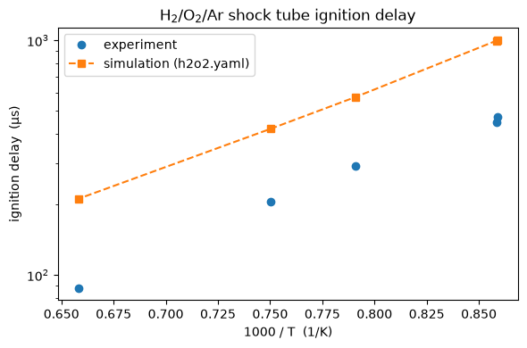

Example: hydrogen shock tube¶
This notebook evaluates a hydrogen–oxygen kinetic model against shock-tube ignition-delay measurements for a dilute H₂/O₂/Ar mixture, then compares the simulated ignition delays with the experimental values.
The experimental data, dataset list, and species-key file live in the examples/h2o2-shocktube directory of the repository (browse on GitHub). The kinetic model, h2o2.yaml, ships with Cantera, so no local model file is needed.
Run the evaluation¶
The evaluate_model function reads the dataset, simulates every datapoint, detects each ignition delay, and returns a dictionary summarizing how well the model reproduces the measurements.
[1]:
from pathlib import Path
import matplotlib.pyplot as plt
import numpy as np
from pyteck.eval_model import evaluate_model
from pyteck.utils import units
example_dir = Path("../examples/h2o2-shocktube").resolve()
[2]:
output = evaluate_model(
model_name="h2o2.yaml",
spec_keys_file=str(example_dir / "spec_keys.yaml"),
dataset_file=str(example_dir / "dataset_file.txt"),
data_path=str(example_dir / "data"),
model_path="",
results_path="results",
)
print(f"average error function: {output['average error function']:.3f}")
print(f"average deviation function: {output['average deviation function']:.3f}")
Standard deviation of 0.02 too low, using 0.10
Done with case H2O2Ar-shocktube-example_1
Done with case H2O2Ar-shocktube-example_0
Done with case H2O2Ar-shocktube-example_4
Done with case H2O2Ar-shocktube-example_2
Done with case H2O2Ar-shocktube-example_3
average error function: 58.741
average deviation function: 7.633
Compare experimental and simulated ignition delays¶
Pull the temperature and the experimental and simulated ignition delay out of the results for each datapoint. The values are stored as strings with units, so we parse them with PyTeCK’s units registry.
[ ]:
datapoints = output["datasets"][0]["datapoints"]
temperature = np.array([units.Quantity(dp["temperature"]).to("K").magnitude for dp in datapoints])
ignition_delay_experiment = np.array(
[units.Quantity(dp["experimental ignition delay"]).to("us").magnitude for dp in datapoints]
)
ignition_delay_simulation = np.array(
[units.Quantity(dp["simulated ignition delay"]).to("us").magnitude for dp in datapoints]
)
# sort by temperature so the simulated points join up smoothly
# (this is not really necessary for a pure scatterplot)
order = np.argsort(temperature)
temperature = temperature[order]
ignition_delay_experiment = ignition_delay_experiment[order]
ignition_delay_simulation = ignition_delay_simulation[order]
Plot the ignition delay (log scale) against 1000/T, the usual Arrhenius-style presentation for ignition-delay data.
[ ]:
fig, ax = plt.subplots(figsize=(6, 4))
ax.semilogy(1000.0 / temperature, ignition_delay_experiment, "o", label="experiment")
ax.semilogy(1000.0 / temperature, ignition_delay_simulation, "s--", label="simulation (h2o2.yaml)")
ax.set_xlabel("1000 / T (1/K)")
ax.set_ylabel("ignition delay (µs)")
ax.set_title("H$_2$/O$_2$/Ar shock tube ignition delay")
ax.legend()
fig.tight_layout()
